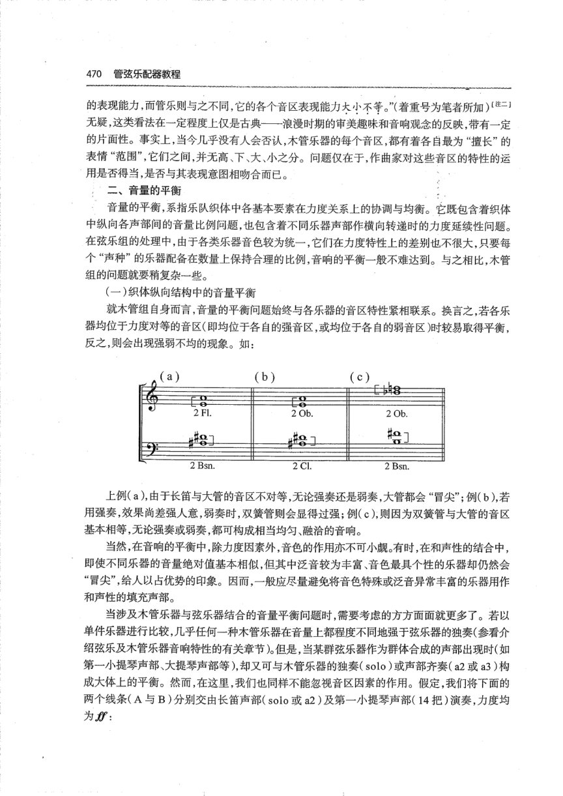
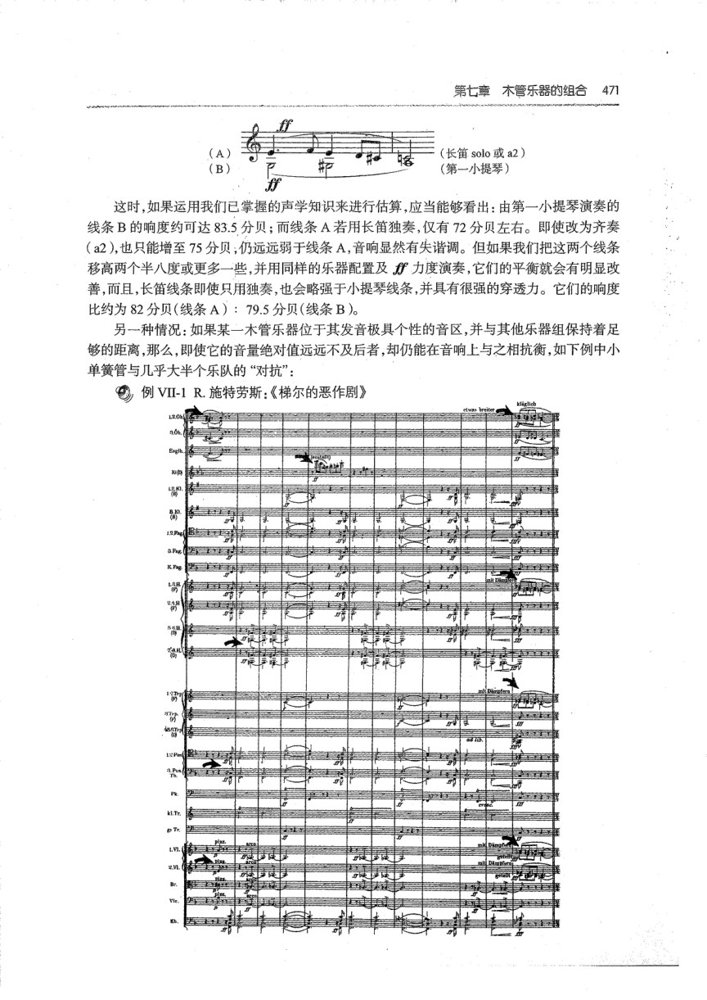
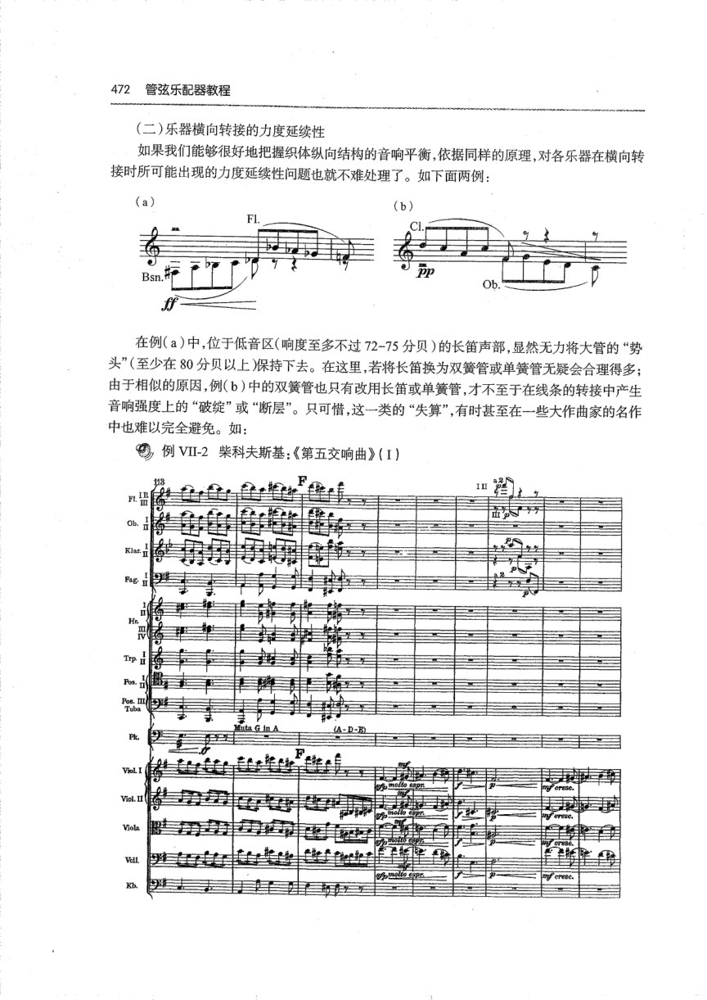
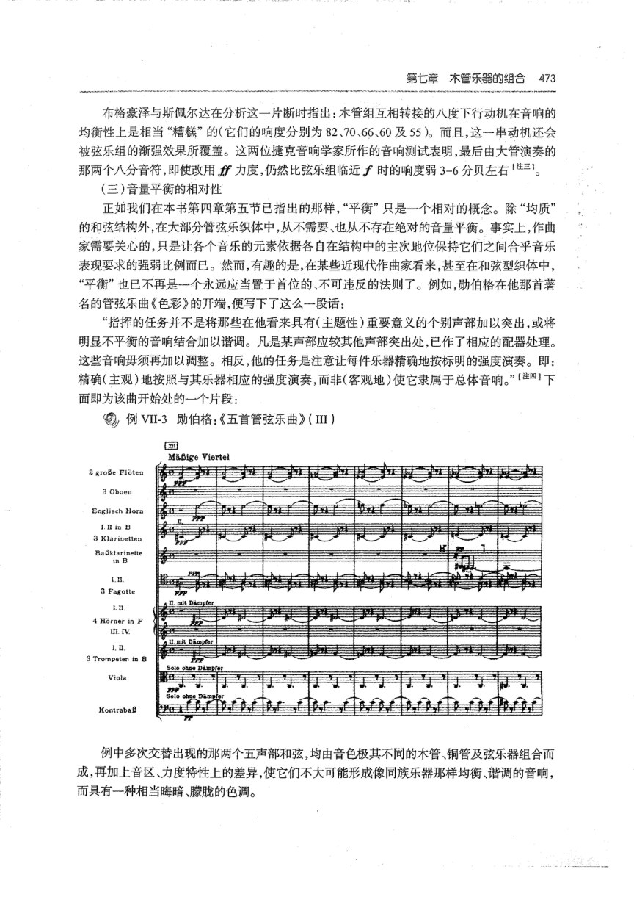

PDF 第 4 页
杨立青中 · 印刷 p.470 · 第七章 木管组组合 · 音量平衡
470管弦乐配器教程
的表现能力，而管乐则与之不同，它的各个音区表现能力大小不等。"(着重号为笔者所加）(注二]
无疑，这类看法在一定程度上仅是古典一—浪漫时期的审美趣味和音响观念的反映，带有一定
的片面性。事实上，当今几乎没有人会否认，木管乐器的每个音区，都有着各自最为“擅长”的
表情“范围”，它们之间，并无高、下、大、小之分。问题仅在于，作曲家对这些音区的特性的运
用是否得当，是否与其表现意图相吻合而已。
二、音量的平衡
音量的平衡，系指乐队织体中各基本要素在力度关系上的协调与均衡。它既包含着织体
中纵向各声部间的音量比例问题，也包含着不同乐器声部作横向转递时的力度延续性问题。
在弦乐组的处理中，由于各类乐器音色较为统一，它们在力度特性上的差别也不很大，只要每
个“声种”的乐器配备在数量上保持合理的比例，音响的平衡一般不难达到。与之相比，木管
组的问题就要稍复杂一些。
(一)织体纵向结构中的音量平衡
就木管组自身而言，音量的平衡问题始终与各乐器的音区特性紧相联系。换言之，若各乐
器均位于力度对等的音区（即均位于各自的强音区，或均位于各自的弱音区)时较易取得平衡，
反之，则会出现强弱不均的现象。如：
(a)
(b)
（c)
84
J
2 F1.
2 Ob.
2 Ob.
##]
##
2 Bsn.
2 C1.
2 Bsn.
上例（a)，由于长笛与大管的音区不对等，无论强奏还是弱奏，大管都会“冒尖”；例（b），若
用强奏，效果尚差强人意，弱奏时，双簧管则会显得过强；例（c)；则因为双簧管与大管的音区
基本相等，无论强奏或弱奏，都可构成相当均匀、融洽的音响。
当然，在音响的平衡中，除力度因素外，音色的作用亦不可小靓。有时，在和声性的结合中，
即使不同乐器的音量绝对值基本相似，但其中泛音较为丰富、音色最具个性的乐器却仍然会
“冒尖”，给人以占优势的印象。因而，一般应尽量避免将音色特殊或泛音异常丰富的乐器用作
和声性的填充声部。
当涉及木管乐器与弦乐器结合的音量平衡问题时，需要考虑的方方面面就更多了。若以
绍弦乐及木管乐器音响特性的有关章节）。但是，当某群弦乐器作为群体合成的声部出现时（如
第一小提琴声部、大提琴声部等),却又可与木管乐器的独奏(solo)或声部齐奏(a2或a3）构
成大体上的平衡。然而，在这里，我们也同样不能忽视音区因素的作用。假定，我们将下面的
两个线条(A与B)分别交由长笛声部(solo或a2)及第一小提琴声部(14把)演奏，力度均
为ff：
PDF 第 5 页
杨立青中 · 印刷 p.471 · 第七章 木管组组合 · 音量平衡
第七章木管乐器的组合
471
(A)
（长笛solo或a2）
(B）
护
（第一小提琴）
这时，如果运用我们已掌握的声学知识来进行估算，应当能够看出：由第一小提琴演奏的
线条B的响度约可达83.5分贝；而线条A若用长笛独奏，仅有72分贝左右。即使改为齐奏
（a2），也只能增至75分贝；仍远远弱于线条A，音响显然有失谐调。但如果我们把这两个线条
移高两个半八度或更多一些，并用同样的乐器配置及f力度演奏，它们的平衡就会有明显改
善，而且，长笛线条即使只用独奏，也会略强于小提琴线条，并具有很强的穿透力。它们的响度
比约为82分贝（线条A）：79.5分贝（线条B）。
另一种情况：如果某一木管乐器位于其发音极具个性的音区，并与其他乐器组保持着足
够的距离，那么，即使它的音量绝对值远远不及后者，却仍能在音响上与之相抗衡，如下例中小
单簧管与几乎大半个乐队的“对抗”：
例VII-1R.施特劳斯：《梯尔的恶作剧》
n06,
PDF 第 6 页
杨立青中 · 印刷 p.472 · 第七章 木管组组合 · 音量平衡
472管弦乐配器教程
（二）乐器横向转接的力度延续性
如果我们能够很好地把握织体纵向结构的音响平衡，依据同样的原理，对各乐器在横向转
接时所可能出现的力度延续性问题也就不难处理了。如下面两例：
(a）
(b）
Fl.
pp
Bsn.
在例（a）中，位于低音区（响度至多不过72-75分贝）的长笛声部，显然无力将大管的“势
头”（至少在80分贝以上）保持下去。在这里，若将长笛换为双簧管或单簧管无疑会合理得多；
由于相似的原因，例（b）中的双簧管也只有改用长笛或单簧管，才不至于在线条的转接中产生
音响强度上的“破绽”或“断层”。只可惜，这一类的“失算”，有时甚至在一些大作曲家的名作
中也难以完全避免。如：
例VII-2柴科夫斯基：《第五交响曲》（I）
PDF 第 7 页
杨立青中 · 印刷 p.473 · 第七章 木管组组合 · 音量平衡
第七章木管乐器的组合473
布格豪泽与斯佩尔达在分析这一片断时指出：木管组互相转接的八度下行动机在音响的
均衡性上是相当“糟糕”的（它们的响度分别为82、70、66、60及55）。而且，这一串动机还会
被弦乐组的渐强效果所覆盖。这两位捷克音响学家所作的音响测试表明，最后由大管演奏的
那两个八分音符，即使改用f力度，仍然比弦乐组临近f时的响度弱3-6分贝左右[注三1。
（三）音量平衡的相对性
正如我们在本书第四章第五节已指出的那样，“平衡”只是一个相对的概念。除“均质”
的和弦结构外，在大部分管弦乐织体中，从不需要、也从不存在绝对的音量平衡。事实上，作曲
家需要关心的，只是让各个音乐的元素依据各自在结构中的主次地位保持它们之间合乎音乐
表现要求的强弱比例而已。然而，有趣的是，在某些近现代作曲家看来，甚至在和弦型织体中，
“平衡”也已不再是--个永远应当置于首位的、不可违反的法则了。例如，勋伯格在他那首著
名的管弦乐曲《色彩》的开端，便写下了这么一段话：
“指挥的任务并不是将那些在他看来具有(主题性）重要意义的个别声部加以突出，或将
明显不平衡的音响结合加以谐调。凡是某声部应较其他声部突出处，已作了相应的配器处理。
这些音响毋须再加以调整。相反，他的任务是注意让每件乐器精确地按标明的强度演奏。即：
精确(主观)地按照与其乐器相应的强度演奏，而非(客观地)使它隶属于总体音响。”[注四]下
面即为该曲开始处的一个片段：
例VII-3勋伯格：《五首管弦乐曲》（III）
四
MaBige Viertel
2 groBe Fioten
3 Oboen
Eoglisch Hort
I. io B
3 Klaritetten
BaBklarinette
n
1.11.
3 Fagotte
L. UI.
4 Horner in F
AI TII
1. l.
3 Trompeten in B
Viola
Kontrabaf
例中多次交替出现的那两个五声部和弦，均由音色极其不同的木管、铜管及弦乐器组合而
成，再加上音区、力度特性上的差异，使它们不大可能形成像同族乐器那样均衡、谐调的音响，
而具有一种相当嗨暗、朦胧的色调。